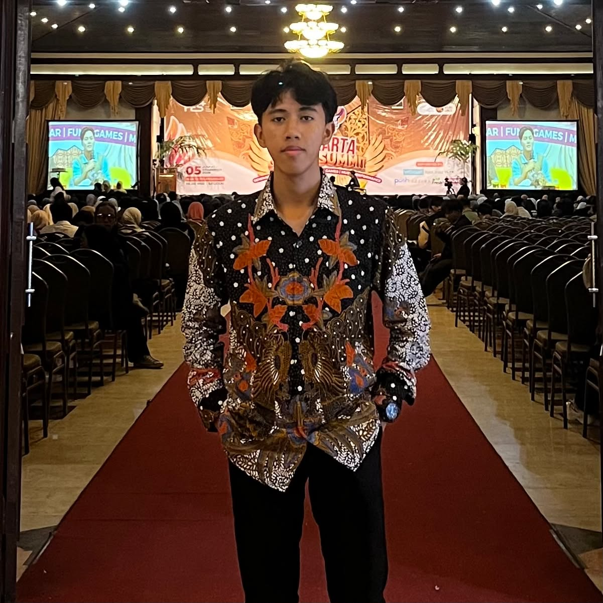

Welcome to Portfolio
Informatics Engineering • UMS
Informatics Engineering • Universitas Muhammadiyah Surakarta
Mahasiswa Semester 3
Mahasiswa Teknik Informatika Universitas Muhammadiyah Surakarta yang passionate di bidang Java OOP, Full-Stack Web Development, dan dasar sistem operasi serta logika jaringan.
Saat ini saya sedang menempuh pendidikan di program studi Teknik Informatika Universitas Muhammadiyah Surakarta (UMS). Bidang utama yang saya tekuni berfokus pada dunia pemodelan perangkat lunak, eksplorasi kode, serta perancangan arsitektur sistem berbasis komputer.
Di samping keahlian teknis, saya juga mendalami ranah pembuatan video konten digital dan strategi pemasaran. Integrasi antara logika pemrograman, estetika visual, serta pemahaman pasar memungkinkan saya menghadirkan karya digital yang bernilai guna sekaligus memiliki daya pikat visual yang kuat.
Apache NetBeans IDE
Membuat program struktural dan berorientasi objek dengan pengelolaan memori dan tipe data yang aman.
Backend Web Development
Pengembangan server-side web application, penanganan RESTful API, dan arsitektur backend.
phpMyAdmin & XAMPP
Perancangan skema relasional tabel, optimasi kueri basis data perbankan dan data transaksi.
Simulasi & System Admin
Simulasi sirkuit logika digital (IC 7490 & IC 7447) serta lingkungan virtualisasi Linux (VirtualBox).
Pengembangan sistem rental pakaian & kostum (Rental Kostum Zaydhan) berbasis Node.js dan Express.js. Mengimplementasikan antarmuka responsif dan alur data penyewaan.
Merancang sirkuit pencacah desimal menggunakan IC 7490 serta dekoder BCD-to-7-Segment menggunakan IC 7447 pada software Proteus 8 Professional.
Membuat skema relasional tabel perbankan dan kueri SQL kompleks pada MariaDB/MySQL menggunakan lingkungan phpMyAdmin dan XAMPP.
S1 Teknik Informatika
Perguruan Tinggi • Mahasiswa Aktif
Sekolah Menengah Atas
Pendidikan Menengah Keatas
Sekolah Menengah Pertama
Pendidikan Menengah Pertama
Sekolah Dasar
Pendidikan Dasar
Tertarik untuk kolaborasi, magang, proyek freelance, atau sekadar ngobrol soal teknologi dan pengembangan web? Jangan ragu untuk menghubungi saya.